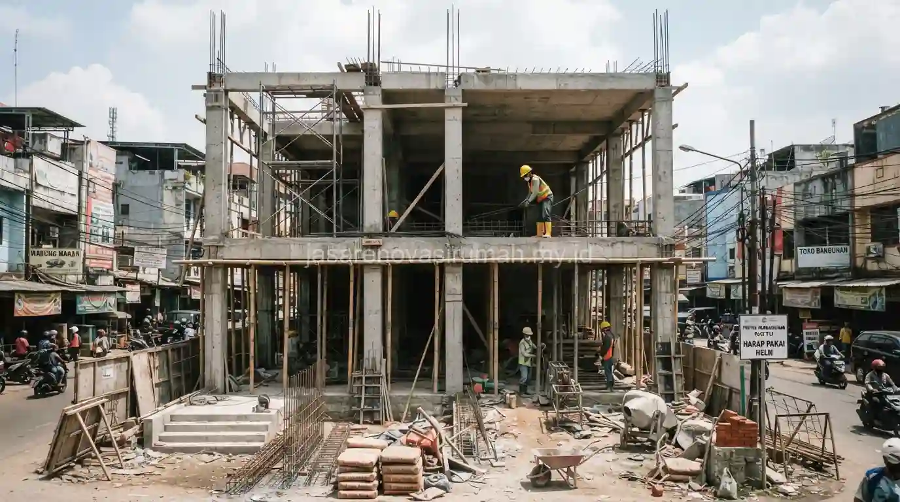

Jasa kontraktor ruko Jakarta yang tepat waktu menawarkan RAB transparan, struktur bangunan yang kuat untuk fungsi komersial, serta pengerjaan sesuai timeline agar operasional usaha tidak tertunda lama.
Pembangunan ruko 2-3 lantai membutuhkan perhitungan struktur yang lebih matang dibanding rumah tinggal biasa, karena harus mempertimbangkan beban lantai untuk toko, gudang, atau kantor sekaligus.
Apa Saja Indikator Kontraktor Ruko yang Terpercaya dan Tepat Waktu?
Kontraktor ruko yang terpercaya biasanya memiliki legalitas usaha jelas, pengalaman proyek komersial, dan mampu memberikan timeline pengerjaan tertulis sejak awal kontrak.
Beberapa indikator yang bisa dicek sebelum menunjuk kontraktor:
- Memiliki portofolio proyek ruko atau bangunan komersial sebelumnya, bukan hanya rumah tinggal.
- Menyediakan RAB rinci yang mencakup struktur, arsitektur, dan mekanikal elektrikal secara terpisah.
- Memiliki tim pengawas lapangan yang rutin melaporkan progres pekerjaan.
- Mencantumkan klausul penalti keterlambatan dalam kontrak kerja.
Bagi pengusaha yang lahannya berada di kawasan padat, aspek legalitas bangunan juga wajib diperhatikan sejak awal, termasuk memastikan dokumen izin sudah lengkap seperti dijelaskan pada panduan syarat urus IMB rumah tinggal, yang prinsip dasarnya juga berlaku untuk bangunan komersial meski dengan persyaratan tambahan.
Apa Saja Tahapan Pembangunan Ruko 2-3 Lantai?
Tahapan pembangunan ruko umumnya mencakup perencanaan struktur, pekerjaan pondasi dan struktur utama, finishing, hingga pemasangan utilitas komersial seperti listrik daya besar.
Berikut tahapan yang biasa dilalui dalam proyek pembangunan ruko:
| Tahapan | Fokus Pekerjaan | Estimasi Durasi |
|---|---|---|
| Perencanaan & desain | Gambar struktur, RAB, perizinan | 2-4 minggu |
| Pekerjaan pondasi & struktur | Pondasi, kolom, balok, plat lantai bertingkat | 6-10 minggu |
| Pekerjaan arsitektur | Dinding, kusen, lantai, plafon | 4-8 minggu |
| Finishing & utilitas | Instalasi listrik daya besar, pengecatan, interior toko | 3-5 minggu |
Durasi pada tabel di atas bersifat umum dan dapat bervariasi tergantung luas bangunan, jumlah lantai, serta kompleksitas desain fasad ruko yang diinginkan pemilik usaha.
Berapa Lama Proses Pembangunan Ruko Biasanya Berlangsung?
Secara umum, pembangunan ruko 2-3 lantai memakan waktu sekitar empat hingga tujuh bulan dari tahap perencanaan hingga serah terima, tergantung kompleksitas struktur dan ketersediaan material.
Faktor yang memengaruhi durasi antara lain kondisi lahan, akses material ke lokasi proyek yang biasanya berada di kawasan padat kota, serta jumlah lantai dan kebutuhan khusus seperti ruang parkir basement.
Kontraktor yang berpengalaman biasanya sudah memiliki strategi mitigasi untuk kendala lapangan seperti ini, sehingga proyek tetap berjalan sesuai target waktu yang disepakati di awal.
Apa Perbedaan Kebutuhan Struktur Ruko dengan Rumah Tinggal?
Struktur ruko memerlukan perhitungan beban yang lebih besar dibanding rumah tinggal karena harus menopang fungsi komersial seperti etalase toko, gudang stok barang, atau lalu lintas pengunjung yang lebih padat.

Kolom dan balok pada bangunan ruko umumnya dirancang dengan dimensi lebih besar, ditambah pertimbangan bentang lebar untuk area toko yang minim sekat di lantai dasar.
Sistem drainase dan saluran air juga perlu direncanakan lebih matang mengingat ruko sering berdempetan dengan bangunan lain di kawasan komersial.
Baca Juga: Syarat Urus IMB Rumah Tinggal Terbaru 2026
Kesalahan Umum Saat Membangun Ruko Komersial
Kesalahan yang paling sering terjadi adalah mengejar biaya termurah tanpa mempertimbangkan kekuatan struktur, padahal ruko harus menopang beban operasional jangka panjang.
Kesalahan lain yang perlu dihindari:
- Tidak menyediakan ruang parkir atau akses bongkar muat barang sejak tahap desain.
- Mengabaikan sirkulasi udara dan pencahayaan pada lantai atas yang digunakan sebagai gudang atau kantor.
- Tidak memperhitungkan kapasitas daya listrik sesuai kebutuhan operasional usaha.
Pada akhirnya, membangun ruko 2-3 lantai membutuhkan kontraktor yang memahami kebutuhan struktur komersial sekaligus mampu menjaga timeline dan anggaran tetap terkendali.
Tim jasa kontraktor bangunan kami siap membantu mulai dari konsultasi desain, penyusunan RAB, hingga serah terima proyek, dan Anda bisa melihat referensi hasil kerja kami pada portofolio proyek komersial sebelum memulai konsultasi.